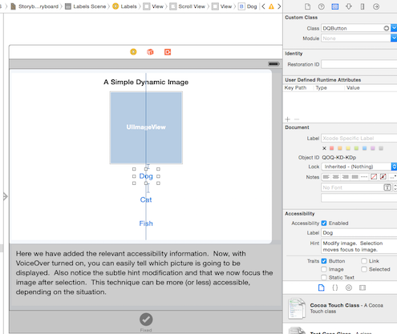
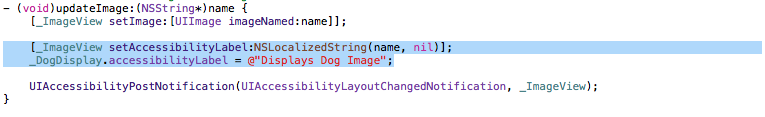

Accessibility Labels are fundemental to iOS Accessibility, they are the bridge connecting the visual aspects of your application to voiceover. Accessibility Hints are similar to Labels, and can be implemented in the same way, however, hints contain more nuanced information than labels. From an accessibility standpoint, it is very important that these hints and labels are implemented properly. There are two ways we can accomplish this: Using the storyboard editor, and programatically
The first and simplest way to add accessibility labels/hints to your application is to simply use the story board editor to add them to your elements. The steps for doing this are fairly simple.
Below is what this looks like for the Dog button in the Labels Section of the Deque U app.
Sometimes setting the accessibility label/hint in the Storyboard Editor doesn't quite cut it. For instance, the properties of the element might change when the app is running or when the user performs an action. In this case, you will want to set the accessibility descriptions programatically. This can be done easily with just a few lines of code.
accessibilityLabel/accessibilityHint member OR the setAccessibilityLabel/setAccessibilityHint function to add the appropriate string values.Below are the two ways to set an accessibility Label.
We hope you found this tutorial useful! Make sure to check out our app, Deque U for iOS on the App Store, and take a peek at the rest of our blog posts.